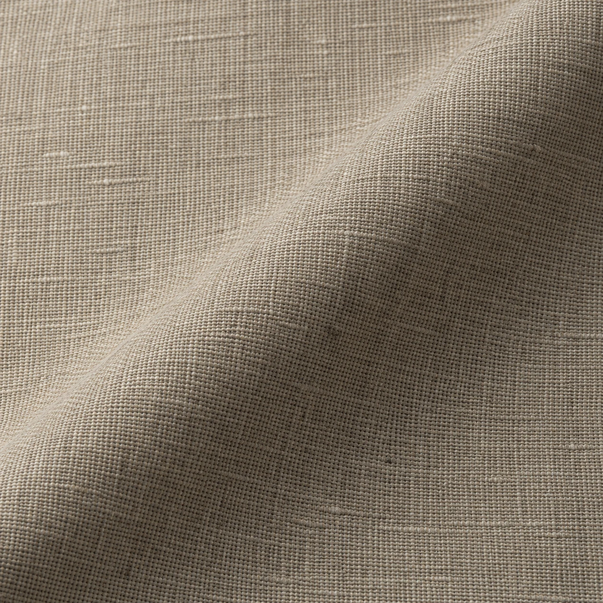
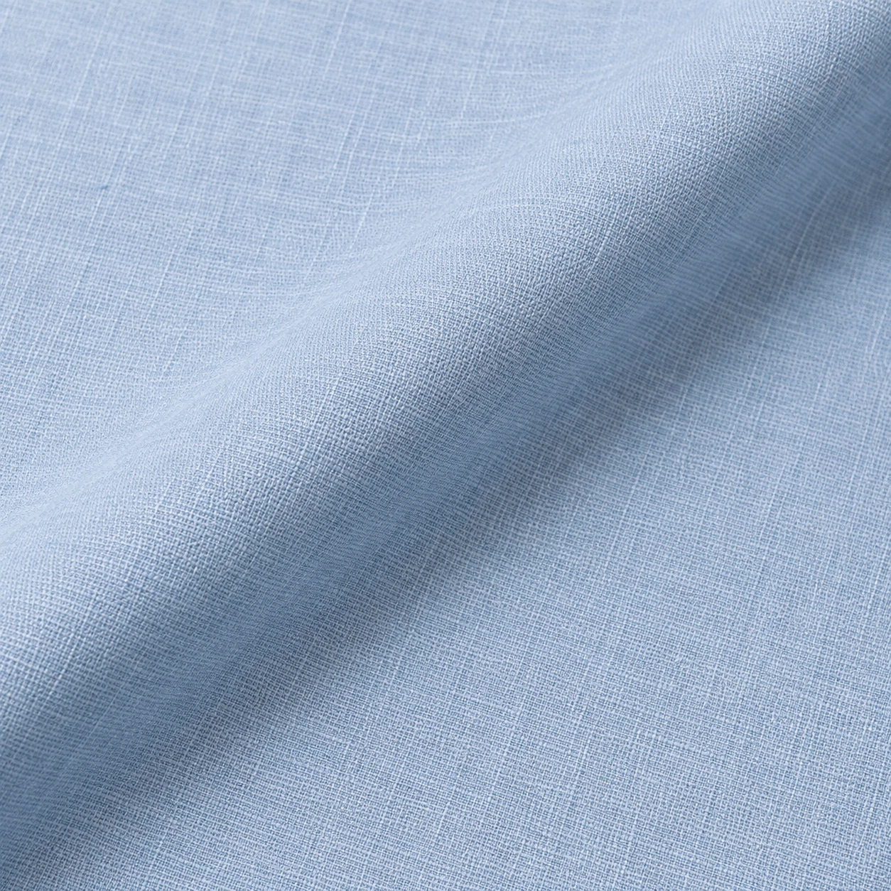

LZ-05
LZ-06 / Daily Cloth / Cambric
Nadi Cambric
A pale blue study with a soft plain-weave direction. Consider it for a kurta in warm months.
Illustrative fabric guidePKR 3,790Mockup budget for a typical unstitched suit-cut reference. Actual length and price depend on width, measurements and garment.
- Shade direction
- Pale blue
- Surface study
- Soft plain-weave direction
- Visual weight
- Light / design intent
- Intended use
- Kurta / Warm months
- Fibre, width, care
- Confirm against selected physical stock
A closely woven, smooth plain-weave direction with a soft but composed hand.
Build a fabric & tailoring briefThis is a concept image and product budget for a website mockup. It is not a photograph or specification of confirmed LOOMZ stock.
The surface / 01
Look closer.
Soft plain-weave direction. The macro visual invites a closer reading of the cloth; the final decision belongs to a physical swatch, its composition and the way it will be cut.